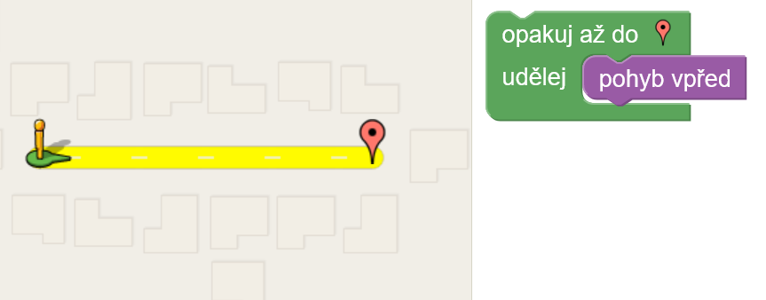
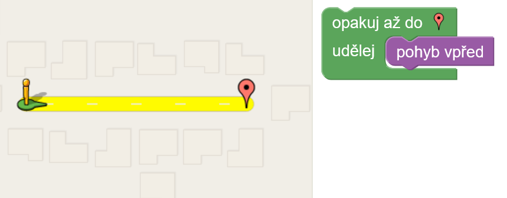
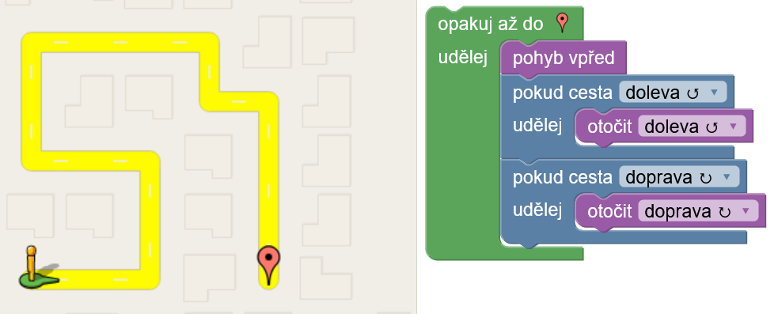
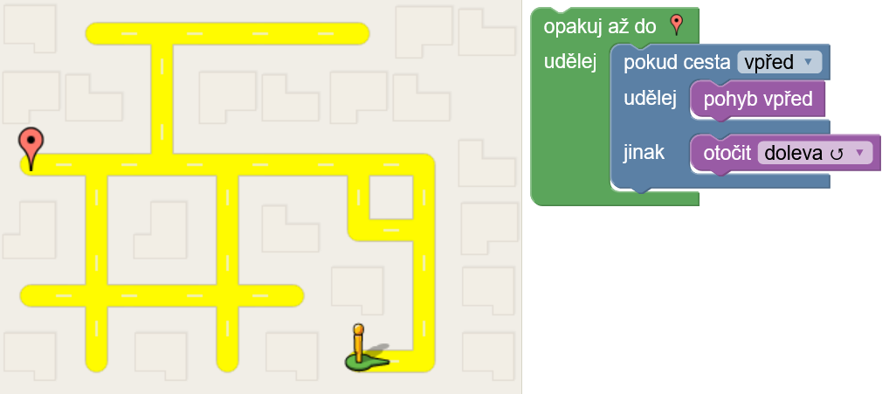
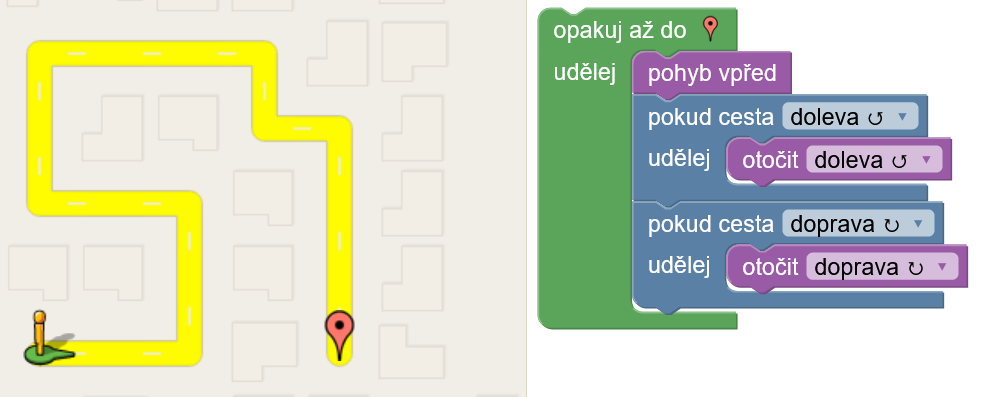
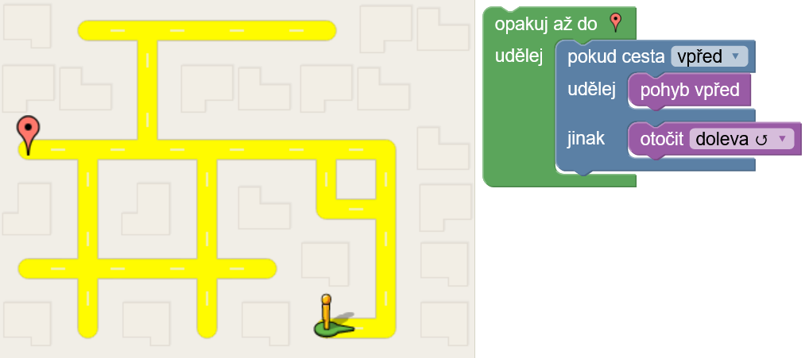

Scratch
V tomto kroužku budeme programovat Mindstorms roboty, kteří se programují pomocí blokového programování. Velmi podobný je tím pádem scratch, kterým začneme.
Začneme jednoduchou hrou na stránce blockly.games. Zde je soubor úloh, které nám pomohou se začátkem. Níže budou řešení na ty úlohy.
Řešení úloh

 



 


